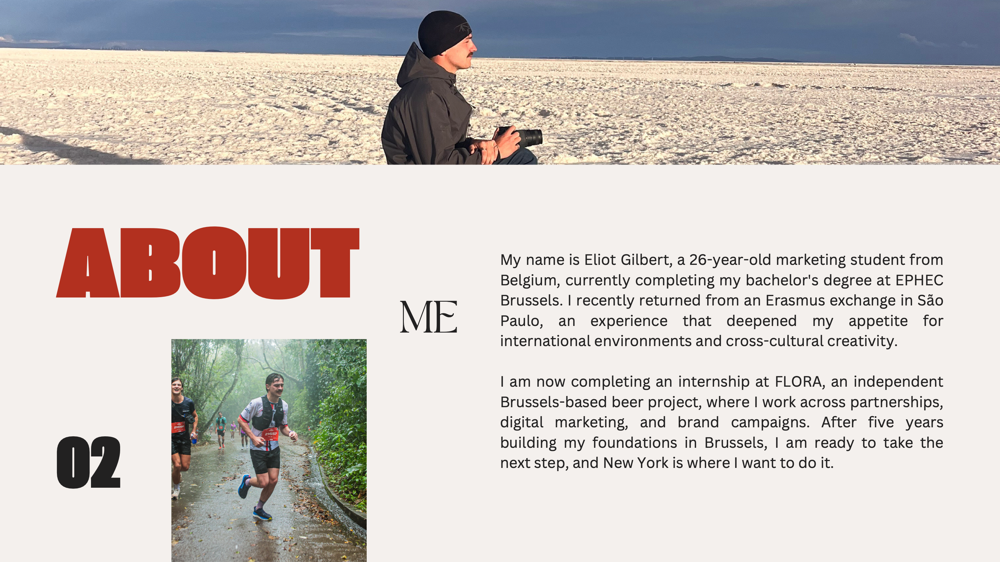
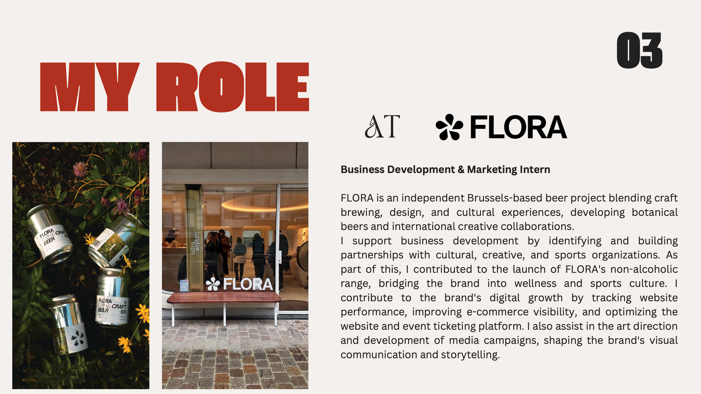
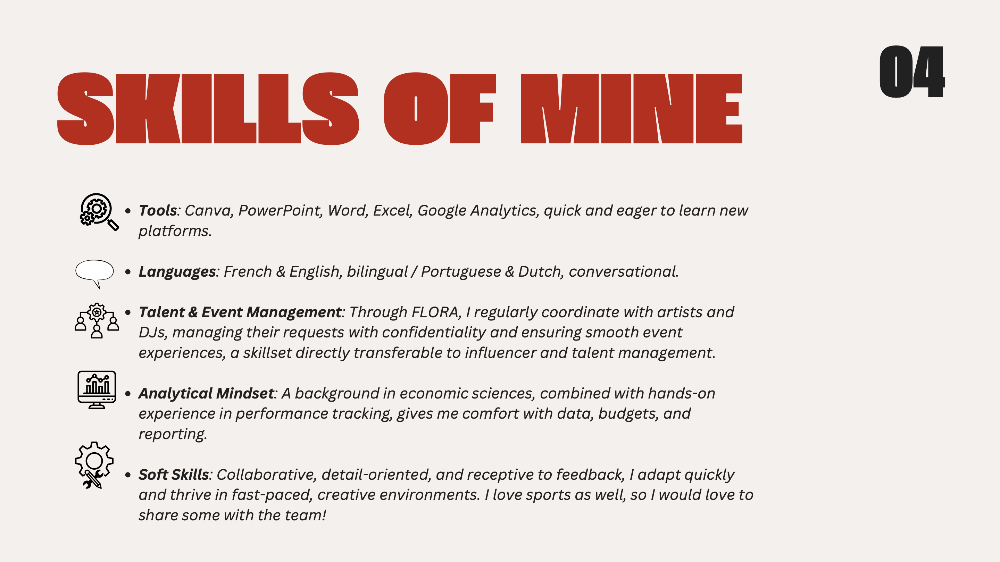
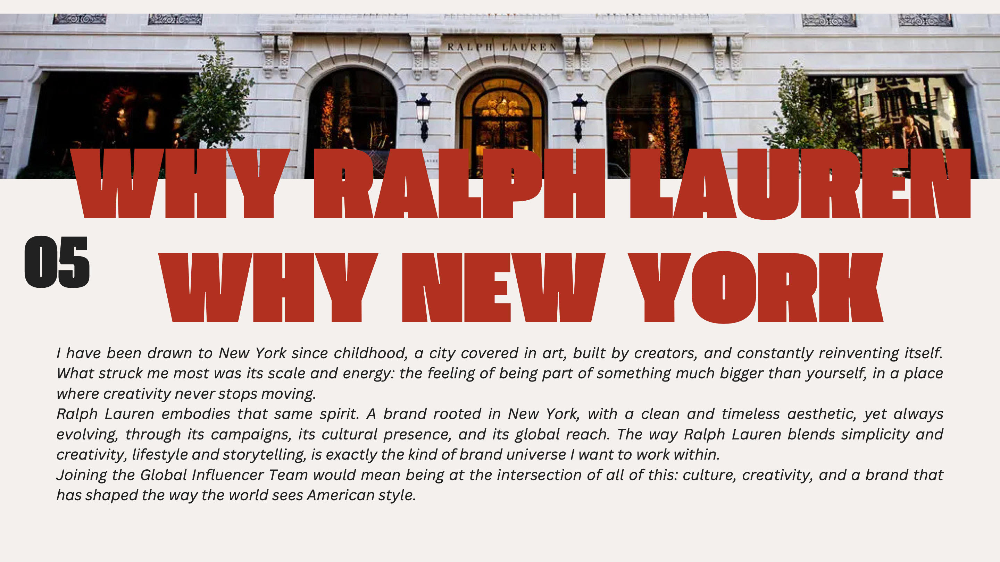
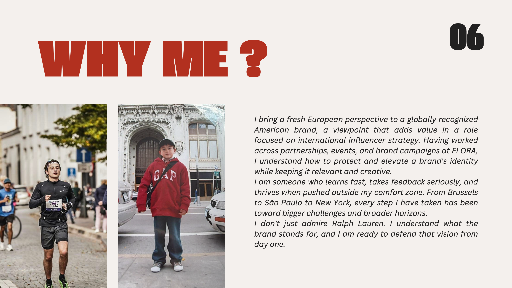
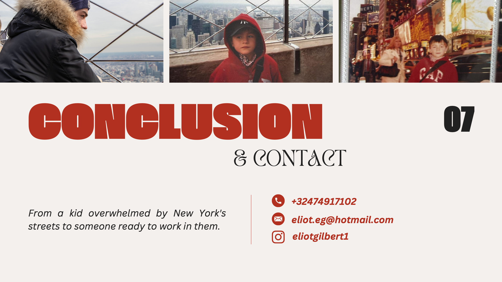

ABOUT ME
My name is Eliot Gilbert, a 26-year-old marketing student from Belgium, currently completing my bachelor's degree at EPHEC Brussels. I recently returned from an Erasmus exchange in São Paulo, an experience that deepened my appetite for international environments and cross-cultural creativity.
I am now completing an internship at FLORA, an independent Brussels-based beer project, where I work across partnerships, digital marketing, and brand campaigns. After five years building my foundations in Brussels, I am ready to take the next step, and New York is where I want to do it.
MY ROLE AT FLORA
Business Development & Marketing Intern
FLORA is an independent Brussels-based beer project blending craft brewing, design, and cultural experiences, developing botanical beers and international creative collaborations.
I support business development by identifying and building partnerships with cultural, creative, and sports organizations. As part of this, I contributed to the launch of FLORA's non-alcoholic range, bridging the brand into wellness and sports culture.
I contribute to the brand's digital growth by tracking website performance, improving e-commerce visibility, and optimizing the website and event ticketing platform. I also assist in the art direction and development of media campaigns, shaping the brand's visual communication and storytelling.

SKILLS OF MINE
- Tools: Canva, PowerPoint, Word, Excel, Google Analytics, quick and eager to learn new platforms.
- Languages: French & English, bilingual / Portuguese & Dutch, conversational.
- Talent & Event Management: Through FLORA, I regularly coordinate with artists and DJs, managing their requests with confidentiality and ensuring smooth event experiences, a skillset directly transferable to influencer and talent management.
- Analytical Mindset: A background in economic sciences, combined with hands-on experience in performance tracking, gives me comfort with data, budgets, and reporting.
- Soft Skills: Collaborative, detail-oriented, and receptive to feedback, I adapt quickly and thrive in fast-paced, creative environments. I love sports as well, so I would love to share some with the team!


WHY RALPH LAUREN WHY NEW YORK
I have been drawn to New York since childhood, a city covered in art, built by creators, and constantly reinventing itself. What struck me most was its scale and energy: the feeling of being part of something much bigger than yourself, in a place where creativity never stops moving.
Ralph Lauren embodies that same spirit. A brand rooted in New York, with a clean and timeless aesthetic, yet always evolving, through its campaigns, its cultural presence, and its global reach. The way Ralph Lauren blends simplicity and creativity, lifestyle and storytelling, is exactly the kind of brand universe I want to work within.
Joining the Global Influencer Team would mean being at the intersection of all of this: culture, creativity, and a brand that has shaped the way the world sees American style.
WHY ME?
I bring a fresh European perspective to a globally recognized American brand, a viewpoint that adds value in a role focused on international influencer strategy. Having worked across partnerships, events, and brand campaigns at FLORA, I understand how to protect and elevate a brand's identity while keeping it relevant and creative.
I am someone who learns fast, takes feedback seriously, and thrives when pushed outside my comfort zone. From Brussels to São Paulo to New York, every step I have taken has been toward bigger challenges and broader horizons.
I don't just admire Ralph Lauren. I understand what the brand stands for, and I am ready to defend that vision from day one.


CONCLUSION & CONTACT
From a kid overwhelmed by New York's streets to someone ready to work in them.